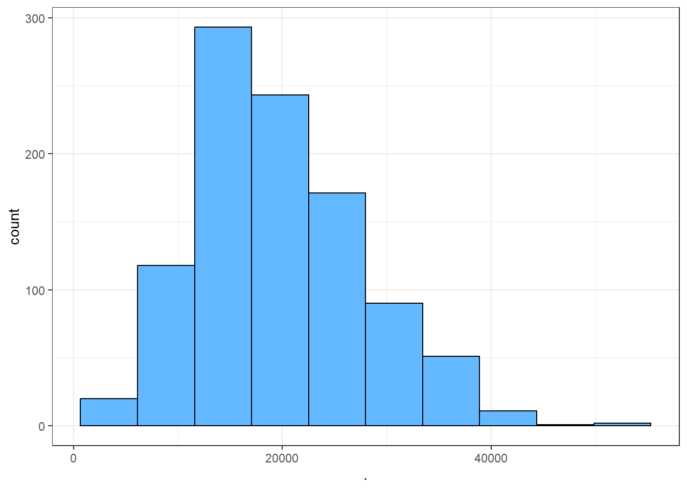
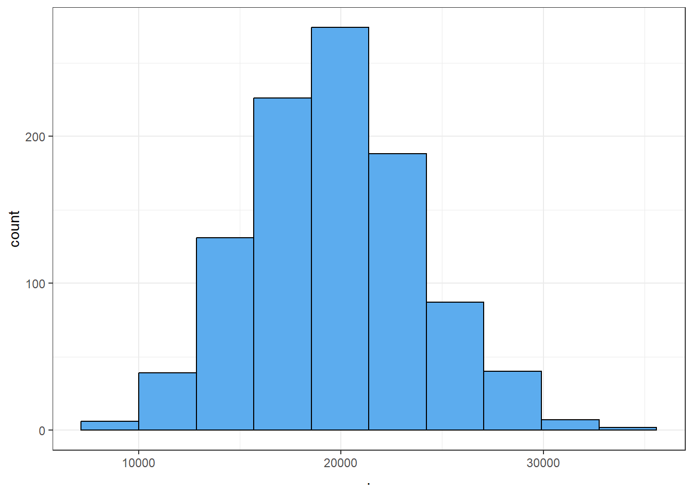
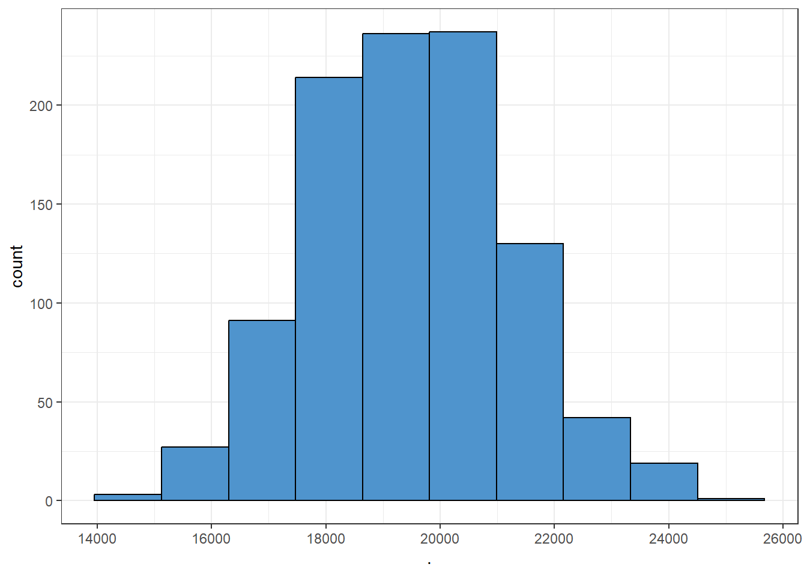
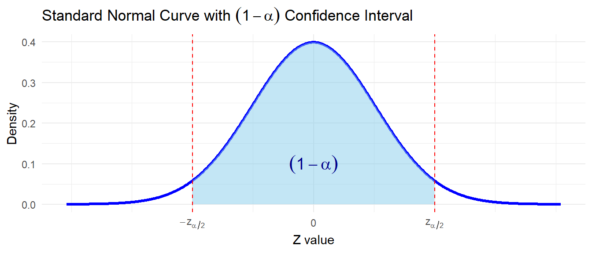
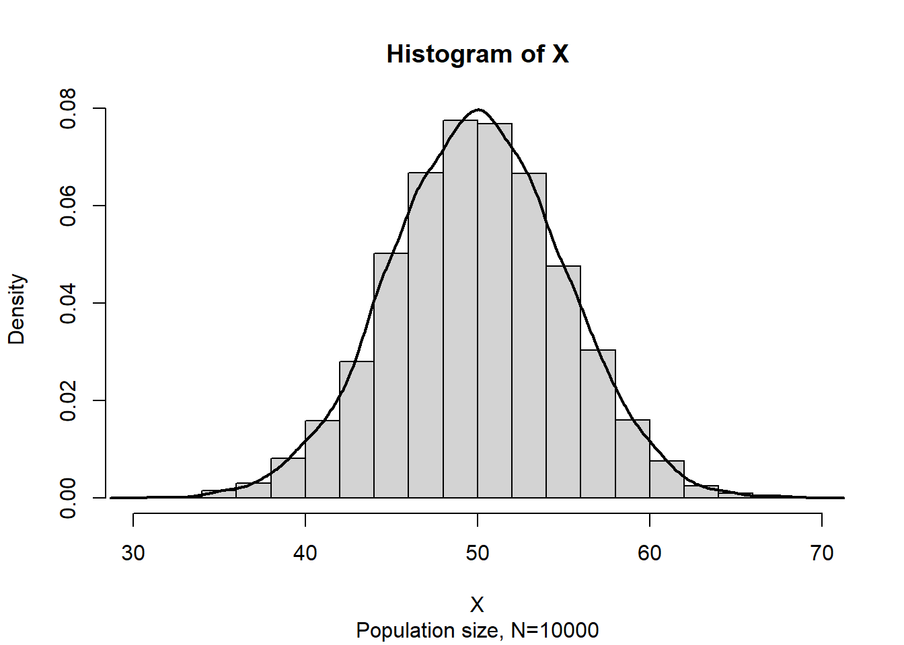

6 Statistical inference
Statistical inference refers to the branch of statistics that focuses on making decisions and drawing conclusions about populations based on sample data. These methods use information collected from a sample to infer characteristics of the larger population.
Statistical inference may be divided into two major areas:
Parameter estimation and
Hypothesis testing
Parameter estimation involves estimation of population parameter from sample data.
Hypothesis testing involves test any claim about population parameter using sample data.
6.1 Parameter estimation
6.1.1 Point estimation
Point Estimation is a type of statistical inference where we use sample data to calculate a single number (a point) that serves as the best guess for an unknown population parameter.
Note
Random sample
Statistic
Point estimator
Point estimate
| Population parameter | Symbol | Point estimator |
|---|---|---|
| Population mean | \(\mu\) | Sample mean, \(\bar X=\frac{\sum_{i=1}^n X_i}{n}\) |
| Population standard deviation | \(\sigma\) | Sample standard deviation, \(S=\sqrt{\frac{\sum(X-\bar X)^2}{n-1}}=\sqrt {\frac{\sum X^2 -n\cdot \bar X^2}{n-1}}\) |
| Population proportion | \(p\) | Sample proportion, \(\hat P=\frac{\# \ \ of \ \ outcomes\ \ of \ \ interest }{n}\) |
6.1.2 Properties of Point Estimators
Suppose
\(\theta\) be the population parameter of interest
\(\hat \theta\) be the sample statistic or point estimator of \(\theta\)
A “good” estimator has some desirable properties.
Unbiasedness
A sample statistic \(\hat \theta\) is said to be unbiased estimator of the population parameter \(\theta\) if
\[E(\hat\theta)=\theta\] Efficiency
Consistency
6.1.3 Sampling Distributions and the Central Limit Theorem
The probability distribution of a sample statistic is called a sampling distribution.
For example, due to sampling variability the sample mean \(\bar X\) has a sampling distribution.
Sampling distribution of \(\bar X\)
Suppose that a random sample of size \(n\) is taken from a normal population with mean \(\mu\) and variance \(\sigma^2\). Now each observation in this sample, say, \(X_1, X_2,...,X_n\), is a normally and independently distributed random variable with mean \(\mu\) and variance \(\sigma^2\). Then because linear functions of independent, normally distributed random variables are also normally distributed (Chapter ?), we conclude that the sample mean
\[\bar X=\frac{X_1+X_2+....+X_n}{n}\] has a normal distribution with mean \(\mu_{\bar X}=\mu\) and variance \(\sigma^2_{\bar X}=\frac{\sigma^2}{n}\).
Symbolically, \(\bar X \sim N(\mu,\frac{\sigma^2}{n})\).
But what if we sampling from a non-normal population?
The sampling distribution of the sample mean will still be approximately normal with mean \(\mu\) and variance \(\frac{\sigma^2}{n}\) if the sample size \(n\) is large. This is one of the most useful theorems in statistics, called the central limit theorem. The statement is as follows:
NoteCentral limit theorem
If \(X_1,X_2,...,X_n\) is a random sample of size \(n\) taken from a population (either finite or infinite) with mean \(\mu\) and finite variance \(\sigma^2\) and if \(\bar X\) is the sample mean, the limiting form of the distribution of
\[Z=\frac{\bar X-\mu}{\sigma/\sqrt n}\]
as \(n\rightarrow\infty\), is the standard normal distribution that is \(Z\sim N(0,1)\)
The definition of “sufficiently large” depends on the extent of non-normality of \(X\) . Some authors consider a sample will be sufficiently large if \(n\ge30\) (Walpole et al. 2017).
ImportantCentral Limit Theorem through simulation
In this section we illustrates how sampling distributions of sample means approximate to normal or bell shaped distribution as we increase the sample size .
At first, we consider a population data regarding gdp per capita (USD),2023 of 218 countries. We can see that the distribution of gdp per capita is highly skewed to the right (see Figure fig-fig_clt1).
Now we draw 1000 random samples (without replacement) of different sample sizes and then plot the histogram of samples means.



From Figure fig-cltsim we can see that as the sample size increases, the sampling distribution of sample mean tends to bell-shaped or normal though the population data was very skewed to the right. This simulation clearly demonstrate the fact of Central Limit Theorem (CLT).
For more interactive simulation of CLT please click here to visit the ShinyApp for Central Limit Theorem Simulation.
Problem 7.1 An electronics company manufactures resistors that have a mean resistance of 100 ohms and a standard deviation of 10 ohms. The distribution of resistance is normal. Find the probability that a random sample of n = 25 resistors will have an average resistance of fewer than 95 ohms.
Problem 7.2 Resistors are labeled 100 \(\Omega\). In fact, the actual resistances are uniformly distributed on the interval \((95, 103)\). Suppose 40 resistors are randomly selected. Determine the probability that the sample mean of 40 resistors will be less than 100 \(\Omega\)?
Solution: Let \(X\) be the resistance in ohm. Given \(X\sim U(95,103)\).
Hence, \(\mu=E(X)=\frac{a+b}{2}=\frac{95+103}{2}=99\) and
\(\sigma^2=\frac{(b-a)^2}{12}=\frac{(103-95)^2}{12}=5.33\).
Since \(n=40\) is sufficiently large so according to CLT \(\bar X\sim_{} N(\mu, \sigma^2_{\bar X})\) approximately.
Here, \(\sigma^2_{\bar X}=\sigma^2/n=5.33/40=0.13325\) and \(\sigma_{\bar X}=\sqrt 0.13325=0.3650\)
\[\therefore P(\bar X<100)=P\left(\frac{\bar X-\mu}{\sigma_{\bar X}}< \frac{100-99}{0.3650}\right)=P(Z<2.74)=0.9969\] .
Problem 7.3 A synthetic fiber used in manufacturing carpet has tensile strength that is normally distributed with mean 75.5 psi and standard deviation 3.5 psi. Find the probability that a random sample of n = 6 fiber specimens will have sample mean tensile strength that exceeds 75.75 psi.
6.1.4 Methods of point estimation
Two popular methods of estimations are (a) the method of moments and (b)the method of maximum likelihood .
6.1.4.1 Method of moments
Method of moments uses the relationship between population and sample moments to estimate parameters of interest.
NoteMoments
The \(k^{th}\) population moment is
\[\mu'{_k}= E(X^k) ,\ \ k=1,2,...\]
The corresponding \(k^{th}\) sample moment is
\[m'_{k}=\frac{\sum_{i=1}^n X_i} {n} , \ \ k=1,2,....\]
6.1.4.2 Moment Estimators
To estimate \(k\) parameters, equate the first \(k\) population moments to the first \(k\) sample moments and solving the resulting equations for the unknown parameters.
For instance, to estimate two parameter we can write
\[\mu'_{1}=m'_{1}\]
and
\[\mu'_{2}=m'_{2}\]
For details see (Montgomery and Runger 2014, 256) and (Baron 2019, 245).
6.1.4.3 Method of maximum likelihood
The maximum likelihood technique is among the most effective ways to get a point estimator of a parameter. The renowned British statistician Sir R. A. Fisher created this method in the 1920s. As the name suggests, the value of the parameter that maximizes the likelihood function will serve as the estimator.
NoteMaximum Likelihood Estimator
Suppose that \(X\) is a random variable with probability distribution \(f (x;\theta )\) where \(\theta\) is a single unknown parameter. Let \(x_1,x_2,...,x_n\) be the observed values in a random sample of size \(n\). Then the likelihood function of the sample is
\[L(\theta)=f(x_1;\theta)\cdot f(x_2;\theta)....f(x_n;\theta)=\prod_{i=1}^n f(x_i;\theta)\] The maximum likelihood estimator (MLE) of \(\theta\) is the value of \(\theta\) that maximizes the likelihood function \(L(\theta)\) .
For details see (Montgomery and Runger 2014, 258) and (Baron 2019, 248).
6.2 Interval estimation
Instead of estimating a population parameter by a single value (point estimator) it is more reasonable to estimate with an interval with some confidence (probability) that our parameter value will be in the interval.
NoteInterval Estimator
An interval estimator is a rule for determining (based on sample information) an interval that is likely to include the parameter. The general form of an interval estimate is as follows:
\[Point\ \ estimate \pm margin \ \ of \ \ error\]
Due to sampling variability, interval estimator is also random.
NoteDeveloping (1-\(\alpha\))% CI for \(\mu\)

6.2.1 Interval estimate of a population mean: \(\sigma\) known
The \((1-\alpha)100\%\) confidence interval for \(\mu\) is :
\[\bar x \pm z_{\alpha/2} \frac{\sigma}{\sqrt n} \tag{6.1}\]
Or,
\[\bar x-z_{\alpha/2}\frac {\sigma}{\sqrt n}, \bar x+z_{\alpha/2}\frac {\sigma}{\sqrt n}\]
We can express this confidence interval in a probabilistic way:
\[P\left( \bar x-z_{\alpha/2}\frac{\sigma}{\sqrt n}<\mu<\bar x+z_{\alpha/2}\frac{\sigma}{\sqrt n} \right)=1-\alpha\]
NOTE:
1) Here, \(z_{\alpha/2}\) is the \(z\) value providing an area of \(\alpha/2\) in the upper tail of the standard normal distribution that is \(P(Z>z_{\alpha/2})=\alpha/2\).
2) \(z_{\alpha/2} \cdot \frac{\sigma}{\sqrt n}\) is often called margin of error (ME).
6.2.2 Interpretation of confidence interval
The probabilistic equation of confidence interval says that, if we repeatedly construct confidence intervals in this manner, we will expect \((1-\alpha)100\%\) of them contain \(\mu\).
6.2.3 Understanding confidence interval through Simulation
Suppose \(X\sim N(50,5^2)\) . Now consider a population data of size \(N=10000\) and the histogram of \(X\) is:

Now we draw a random sample of size \(n=50\) from this population and construct a 95% confidence interval (CI) for \(\mu\). The CI may or may not include the \(\mu=50\) !!!
Sample data : 52.60842 55.16664 59.23435 44.2092 50.94234 43.34063 44.65922 53.81687 47.60075 46.63776 49.04826 49.44461 52.87322 46.22968 48.2174 55.67331 53.41989 51.86472 54.8001 41.25542 47.11374 47.38467 46.27874 49.85406 44.46384 52.43189 44.33381 53.19745 53.2059 57.02731 43.5203 48.93579 50.28559 55.69281 48.55212 49.2889 45.48768 46.8649 46.96022 35.22993 54.00936 58.99123 50.92287 45.76209 45.1751 44.65327 48.44115 49.47725 55.49664 44.73951Sample mean: 49.395% CI:
[Lower ,Upper]
[ 47.91 , 50.68 ]Luckily our 95% CI contains the true population mean \(\mu=50\) 😊.
Lets simulate 100 samples each of size \(n=50\) and construct all 95% CIs.

We can see that out of 100 CIs , 95 of them contain true population mean \(\mu=50\) and the rest 5 do not.
| \(1-\alpha\) | \(\alpha\) | \(z_{\alpha/2}\) |
|---|---|---|
| 0.90 | 0.10 | 1.645 |
| 0.95 | 0.05 | 1.96 |
| 0.98 | 0.02 | 2.33 |
| 0.99 | 0.01 | 2.575 |
6.2.4 Interval estimate of a population mean: \(\sigma\) unknown
The \((1-\alpha)100\%\) confidence interval for \(\mu\) is :
\[\bar x \pm t_{\alpha/2} \frac{s}{\sqrt n} \tag{6.2}\]
Or,
\[\bar x-t_{\alpha/2}\frac {s}{\sqrt n}, \bar x+t_{\alpha/2}\frac {s}{\sqrt n}\]
We can express this confidence interval in a probabilistic way:
\[P\left( \bar x-t_{\alpha/2}\frac{s}{\sqrt n}<\mu<\bar x+t_{\alpha/2}\frac{s}{\sqrt n} \right)=1-\alpha\]
Here, \(t_{\alpha/2}\) is the \(t\) value providing an area of \(\alpha/2\) in the upper tail of the \(t\) distribution with \((n-1)\) degrees of freedom that is \(P(T>t_{\alpha/2,n-1})=\alpha/2\).
Notet-Distribution
Let \(Z\sim N(0,1)\) and \(V\sim \chi^2 _\nu\) . If \(Z\) and \(V\) are independent then the random variable
\[T=\frac{Z}{\sqrt {V/\nu}}\]
said to have a Student-t distribution with \(\nu\) degrees of freedom. The PDF of \(T\) is
\[f(t)=\frac{\Gamma [(\nu+1)/2]}{\sqrt{ \pi\nu} \ \ \Gamma{(\nu/2)}}\left(1+\frac{t^2}{\nu}\right)^{-(\nu+1)/2} ; -\infty<t<\infty.\]
Properties:
Symmetry: \(t\)-distribution is symmetric about mean (zero). So
if \(P(T>t_\nu)=\alpha\) then \(P(T<-t_\nu)=\alpha\).
Convergence to Normal: As \(n\rightarrow\infty\) then the distribution of \(T_\nu\) approaches the standard normal distribution.
Cauchy as special case: The \(T_1\) distribution is the same as the Cauchy distribution.
6.3 Hypothesis test : Introduction and testing one population parameter
6.3.1 Definition
A statistical hypothesis is a statement about the parameters of one or more populations.
Example 1: A manufacturer claims that the mean life of a smartphone is more than 1.5 years.
Example 2: A local courier service claims that they deliver a ordered product within 30 minutes on average.
Example 3: A sports drink maker claims that the mean calorie content of its beverages is 72 calories per serving.
6.3.2 Types of hypothesis
Statistical hypothesis are stated in two forms- (i) Null hypothesis (\(H_0\)) and (ii) Alternative hypothesis (\(H_1\)).
Both null and alternative hypothesis are the written about the parameter of interest based on the claim.
We will always state the null hypothesis as an equality claim.
However, when the alternative hypothesis is stated with the “<” sign, the implicit claim in the null hypothesis can be taken as ” ≥ “ or “=” sign.
When the alternative hypothesis is stated with the “>” sign, the implicit claim in the null hypothesis can be taken as “≤” or “=” sign.
6.3.3 Developing hypotheses
To develop or state null and alternative hypothesis, at first we have to clearly identify the “claim” about population parameter. Now we will see some examples.
Example 1: A manufacturer claims that the mean life of a smartphone is more than 1.5 years.
Hypothesis:
\(H_0:\mu=1.5\)
\(\ \ \ \ \ \ \ \ \ \ \ \ \ \ H_1: \mu>1.5 \ \ (claim)\)
Example 2: A local courier service claims that they deliver a ordered product within 30 minutes on average.
Hypothesis:
\(H_0: \mu=30\)
\(\ \ \ \ \ \ \ \ \ \ \ \ \ \ H_1: \mu<30 \ \ (claim)\)
Example 3: A sports drink maker claims that the mean calorie content of its beverages is 72 calories per serving.
Hypothesis:
\(\ \ \ \ \ \ \ \ \ \ \ \ \ \ H_0: \mu=72 \ \ (claim)\)
\(H_1: \mu \ne 72\)
6.3.4 Types of test based on alternative hypothesis \(H_1\)
\(H_1: \mu< \mu_0\) (Lower tailed)
\(H_1: \mu> \mu_0\) (Upper tailed)
\(H_1: \mu \ne \mu_0\) (Two-tailed)
6.3.5 Types of error in hypothesis test
While testing a statistical hypothesis concerning population parameter we commit two types of errors.
Type I error occurs when we reject a TRUE \(H_0\)
Type II error occurs when we FAIL to reject a FALSE \(H_0\)
The Level of significance is the probability of comiting Type I error. It is denoted by \(\alpha\).
\[\alpha= P(Type \ \ I \ \ error)\]
- The probability of committing a Type II error, denoted by \(\beta\).
\[\beta =P(Type \ \ II \ \ error)\]
ImportantNote
Type I error is more serious than Type II error. Because rejecting a TRUE statement is more devastating than FAIL to reject a FALSE statement. So, we always try to keep our probability of Type I error as small as possible (1% or at most 5%).
So, how these hypotheses will be tested?
To test a hypothesis we have to determine
a test-statistic; and
Critical/Rejection region based on the sampling distribution of test-statistic for a given \(\alpha\) ;
If the value of test-statistic falls in Critical/Rejection region, then we reject Null (\(H_0\)) hypothesis; otherwise not.
Another way is to use P-value. What is p-value?
The P-value is the smallest level of significance that would lead to rejection of the null hypothesis \(H_0\) with the given data.
The P-value is the probability of observing a test statistic as extreme as, or more extreme than, the value calculated from your sample data, assuming that the null hypothesis is true.
If \(P\)-value \(\le\alpha\) , reject the null hypothesis otherwise we fail to reject \(H_0\).
Most of the statistical softwares routinely compute p-value for any hypothesis test.
6.3.6 Hypothesis testing concerning population mean (\(\mu\))
The following two hypotheses tests are used concerning population mean (\(\mu\)):
1. One sample z-test (with known \(\sigma\))
2. One sample t-test (with unknown \(\sigma\))
6.3.6.1 One sample z-test
When sampling is from a normally distributed population or sample size is sufficiently large and the population variance is known, the test statistic for testing \(H_0: \mu=\mu_0\) at \(\alpha\) is
\[z_0=\frac{\bar x-\mu_0}{\sigma /\sqrt n}\]
Decision (Critical value approach): If calculated \(z\) falls in rejection region (CR) , then reject \(H_0\) . Otherwise, do not reject \(H_0\).
For lower tailed test, reject \(H_0\) if \(z_0<-z_\alpha\) ;
For upper tailed test, reject \(H_0\) if \(z_0> z_\alpha\) ;
For two-tailed test, reject \(H_0\) if \(z_0<-z_{\alpha/2}\) or \(z_0>z_{\alpha/2}\) .

Decision (P-value approach): If calculated P-value for the test statistic is less than or equal to \(\alpha\) then reject the \(H_0\) otherwise do not reject.
For lower tailed test, \(P\)-value \(=P(Z<z_0)\);
For upper tailed test, \(P\)-value \(=P(Z>z_0)\);
For two-tailed test, \(P\)-value \(P(Z>|z_0|)+P(Z<-|z_0|)]\).
Problem 7.4 State the null and alternative hypothesis in each case.
a) A hypothesis test will be used to potentially provide evidence that the population mean is more than 10.
b) A hypothesis test will be used to potentially provide evidence that the population mean is not equal to 7.
c) A hypothesis test will be used to potentially provide evidence that the population mean is less than 5.
Problem 7.5 (a) For the hypothesis test H0: μ = 10 against H1:μ >10 and variance known, calculate the P-value for each of the following test statistics.
(i) \(z_0 = 2.05\) (ii) \(z_0 = - 1.84\) (iii) \(z_0 = 0.4\)
Solution 7.5 (a): Since this is an upper-tailed test so
(i) P-value=\(P(Z>2.05)=P(Z<-2.05)=0.0202\)
(ii) P-value=\(P(Z>-1.84)=P(Z<1.84)=0.9671\)
(iii) P-value=\(P(Z>0.4)=P(Z<-0.4)=0.3446\)
Problem 7.5 (b) For the hypothesis test H0: μ = 5 against H1: μ <5 and variance known, calculate the P-value for each of the following test statistics. (i) \(z_0 = 2.05\) (ii) \(z_0 = - 1.84\) (iii) \(z_0 = 0.4\)
Solution 7.5 (b): Since this is an lower-tailed test so
(i) P-value=\(P(Z<2.05)=0.9798\).
(ii) P-value=\(P(Z<-1.84)=0.03288\).
(iii) do it yourself.
Problem 7.5 (c) For the hypothesis test H0:μ = 7 against H1: μ ≠ 7 and variance known, calculate the P-value for each of the following test statistics.
- \(z_0 = 2.05\) (ii) \(z_0 = - 1.84\) (iii) \(z_0 = 0.4\)
Solution 7.5 (c): Since this is an two-tailed test so
(i) P-value=\(P(Z>2.05)+P(Z<-2.05)=2P(Z<-2.05)=0.0404\).
(ii) P-value=\(P(Z<-1.84)+P(Z>1.84)=2P(Z<-1.84)=0.0658\).
(iii) do it yourself.
Problem 7.6 The life in hours of a battery is known to be approximately normally distributed with standard deviation \(\sigma=\) 1.25 hours. A random sample of 10 batteries has a mean life of \(\bar x=\) 40.5 hours. Conduct a hypothesis test to justify the claim that battery life exceeds 40 hours.
Problem 7.7 A bearing used in an automotive application is supposed to have a nominal inside diameter of 1.5 inches. A random sample of 25 bearings is selected, and the average inside diameter of these bearings is 1.4975 inches. Bearing diameter is known to be normally distributed with standard deviation \(\sigma\) = 0.01 inch. Test the hypothesis \(H_0:\mu = 1.5\) . versus \(H_1:\mu \ne 1.5\) using \(\alpha = 0.01\).
Solution 7.7:
Let \(X\) be the inside diameter of the bearings (in inches)
Given,
Sample size, \(n=25\);
Sample mean \(\bar x =1.4975\) inches; Population SD, \(\sigma =0.01\) inch.
Hypotheses:
\[H_0: \mu =1.5\]
\[H_1: \mu \ne 1.5 \ \ (two-tailed)\]
Test statistic: Since X follows normal distribution and \(\sigma\) is known so the test statistic is:
\[z_0=\frac{\bar x-\mu_0}{\sigma/\sqrt n}=\frac{1.4975-1.5}{0.01/\sqrt 25}=-1.25\]
Critical value: At \(\alpha=0.05\),
\[-z_{\alpha/2}=- 1.96\ \ \ and \ \ \ z_{\alpha/2}=1.96\]
Decision: Since \(z_0\) does not fall in critical region so do not reject the \(H_0\).
Conclusion: We can conclude the the mean inside diameter of the bearing is 1.5 inches based on thie sample data.
Problem 7.8 The manufacturer of the X-15 steel-belted radial truck tire claims that the mean mileage the tire can be driven before the tread wears out is 60,000 miles. Assume the mileage wear follows the normal distribution and the standard deviation of the distribution is 5,000 miles. Crosset Truck Company bought 48 tires and found that the mean mileage for its trucks is 59,500 miles. Is Crosset’s experience different from that claimed by the manufacturer at the 0.05 significance level?
6.3.6.2 One sample t-test
When sampling is from a normally distributed population or sample size is sufficiently large and the population variance is unknown, the test statistic for testing \(H_0: \mu=\mu_0\) at \(\alpha\) is
\[t=\frac{\bar x-\mu_0}{s /\sqrt n}\]
Test statistic \(t\) follows a Student’s 𝑡 distribution with \((n - 1)\) degrees of freedom.
Decision (Critical value approach): If calculated \(t\) falls in rejection region (CR) , then reject \(H_0\) . Otherwise, do not reject \(H_0\).
For lower tailed test, reject \(H_0\) if \(t<-t_\alpha\) ;
For upper tailed test, reject \(H_0\) if \(t> t_\alpha\) ;
For two-tailed test, reject \(H_0\) if \(t<-t_{\alpha/2}\) or \(t>t_{\alpha/2}\) .
Problem 10.4 Annual per capita consumption of milk is 21.6 gallons (Statistical Abstract of the United States: 2006). Being from the Midwest, you believe milk consumption is higher there and wish to support your opinion. A sample of 16 individuals from the Midwestern town of Webster City showed a sample mean annual consumption of 24.1 gallons with a standard deviation of \(s=4.8\) .
a) Develop a hypothesis test that can be used to determine whether the mean annual consumption in Webster City is higher than the national mean.
b) Test the hypothesis at \(\alpha=0.05\) .
c) Draw a conclusion.
Problem 10.5 The mean length of a small counterbalance bar is 43 millimeters. The production supervisor is concerned that the adjustments of the machine producing the bars have changed. He asks the Engineering Department to investigate. Engineer selects a random sample of 10 bars and measures each. The results are reported below in millimeters.
42, 39, 42, 45, 43, 40, 39, 41, 40, 42
Is it reasonable to conclude that there has been a change in the mean length of the bars?
6.3.7 Normality test
In parametric (distribution based ) hypothesis test the checking normality assumption of study variable is a common practice especially when the sample size is small (\(n<30\)). For large samples, the Central Limit Theorem (CLT) often makes this test robust to non-normality.
The normality assumption is checked in two ways:
a) Graphically
b) Numerically using some normality tests
a) Graphical procedure to check normality
We often plot the data (i.e., histogram, density plot, boxplot) to explore so called bell-shaped of the data. But the most popular and effective way to check normality is Q-Q plot (Quantile- Quantile plot).
b) Normality test
A number of normality tests are available; of them a common test is Shapiro-Wilk test of normality suitable for small to medium sample size (3 to 5000) (Shapiro and Wilk 1965; Royston 1982).
Shapiro-Wilk Test Statistic W
\[W=\frac{(\sum_{i=1}^n a_i x_{(i)})^2}{\sum_{i=1}^n (x_i-\bar x)^2}\]
Where,
\(x_{(i)}\) : the \(i^{th}\) order statistic (i.e., the i-th smallest value in the sample)
\(\bar x\): the sample mean
\(a_i\) : constants calculated based on the expected values and variances of order statistics from a standard normal distribution (Tabulated in Shapiro Wilk Table)
\(n\): sample size
Hypotheses:
Null Hypothesis \(H_0\): The data are normally distributed.
Alternative \(H_1\): The data are not normally distributed.
We reject \(H_0\) if the p-value is less than our significance level (e.g., 0.05).
Almost all statistical software and package routinely provide the Shapiro-Wilk test.
In R Shapiro-Wilk test is available as shapiro.test .
Shapiro-Wilk normality test
data: uniform.data
W = 0.93903, p-value = 0.0001683The p-value<0.05 implies (reject \(H_0\)) that the data is not normally distributed.
Shapiro-Wilk normality test
data: normal.data
W = 0.99212, p-value = 0.83The p-value>0.05 implies (do not reject \(H_0\)) that the data is normally distributed.
Baron, Michael. 2019. Probability and statistics for computer scientists. Third edition. A Chapman & Hall book. Boca Raton: London.
Montgomery, Douglas C., and George C. Runger. 2014. Applied Statistics and Probability for Engineers. Sixth edition. Hoboken, NJ: John Wiley; Sons, Inc.
Royston, J. P. 1982. “Algorithm AS 181: The w Test for Normality.” Journal of the Royal Statistical Society. Series C (Applied Statistics) 31 (2): 176–80. http://www.jstor.org/stable/2347986.
Shapiro, Samuel Sanford, and Martin B Wilk. 1965. “An Analysis of Variance Test for Normality (Complete Samples).” Biometrika 52 (3-4): 591–611.
Walpole, Ronald E., Raymond H. Myers, Sharon L. Myers, and Keying Ye. 2017. Probability & statistics for engineers & scientists: MyStatLab update. Ninth edition. Boston: Pearson.